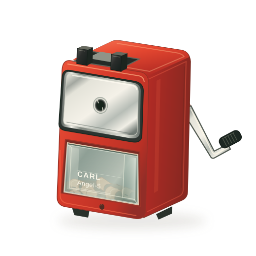

Looking for a bifurcation inside a forecasting model
Steering PANDA, looking for an oscillator, and learning a world model of the model.
I’m a PhD student in Quantitative Life Sciences at McGill, working on nonlinear dynamics and scientific machine learning.
This is a place for notes on mathematics, biology, and ideas still taking shape.

Steering PANDA, looking for an oscillator, and learning a world model of the model.
Noise-robust SINDy, forecast survival, and what foundation models changed.
Useful simplifications and knowing what to leave out. Sample note.
Inverse problems and the equations hiding in data. Sample note.
A pencil sharpener, a blank page, an unfinished thought. Sample note.